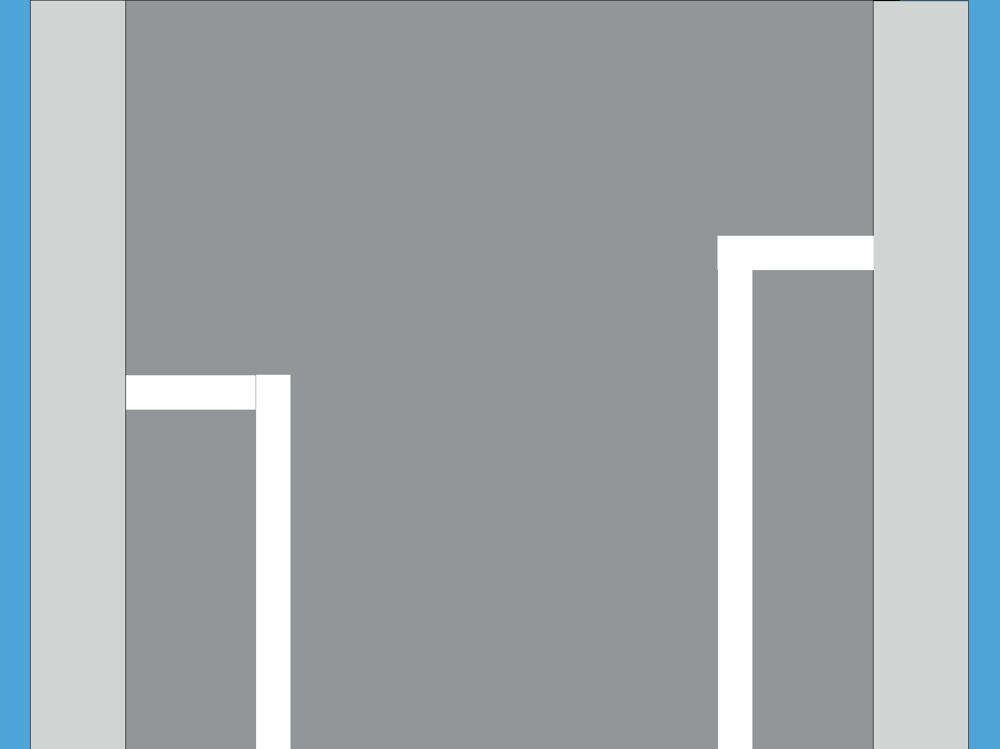

Ligne blanche discontinue
interdiction de franchir, sauf pour dépasser, tourner à gauche, effectuer un demi-tour ou changer de bande
Ligne juxtaposées
tenir compte de la ligne qui se trouve de son côtés.
Les conducteurs qui ont franchi ces lignes pour dépasser peuvent les franchir à nouveau pour reprendre leur place normale sur la chaussée
Bande "heure de pointe"
vous pouvez y circuler uniquement si une flèche verte pointant vers le bas est allumée au dessus de la bande
Ligne oranges
marquage provisoire qui rend sans effet les lignes blanches
Bande bus
emprunter pour contourner un obstacle et à l'approche immédiate d'un carrefour pour tourner; traverser pour accéder ou quitter un emplacement de stationnement ou une propriété riveraine et dans les carrefours
Les motos et les cyclos peuvent l'utiliser si le symbole figure dans le signal
Site spécial franchissable
emprunter pour contourner un obstacle; traverser pour accéder ou quitter un emplacement de stationnement et dans les carrefours
Les motos et les cyclos peuvent l'utiliser si le symbole figure dans le signal
Bord réel en blanc
Une ligne blanche continue tracée sur le bord réel de la chaussée, la bordure d'un trottoir ou d'un accotement en saillie pour les rendres plus apparents
Bord réel en jaune discontinu
interdiction de stationner
Bord fictif de la chaussée
la partie de la voie publique située au-delà de cette ligne est réservée à l'arrêt et au stationnement, sauf sur autoroutes et routes pour automobiles

Bande cyclabe
une bande n'ayant pas une largeur suffisante pour permettre la circulation des véhicules automobiles constitue une piste cyclabe